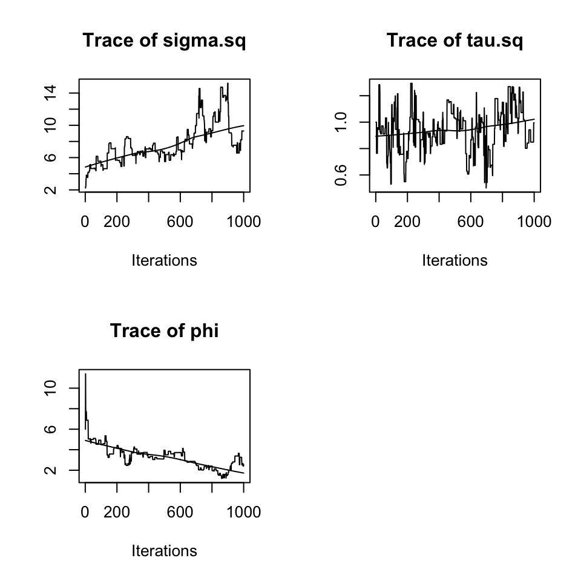
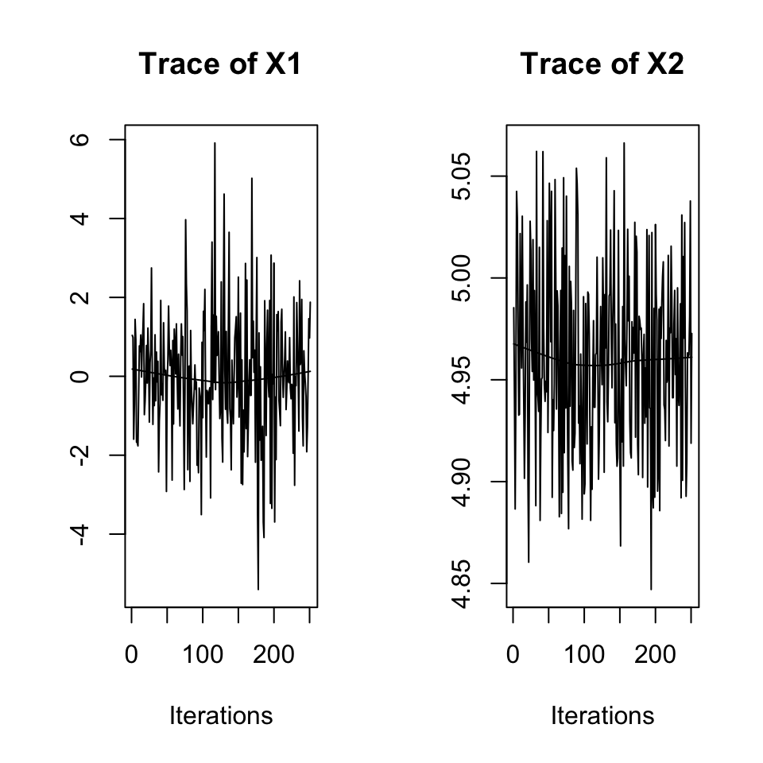
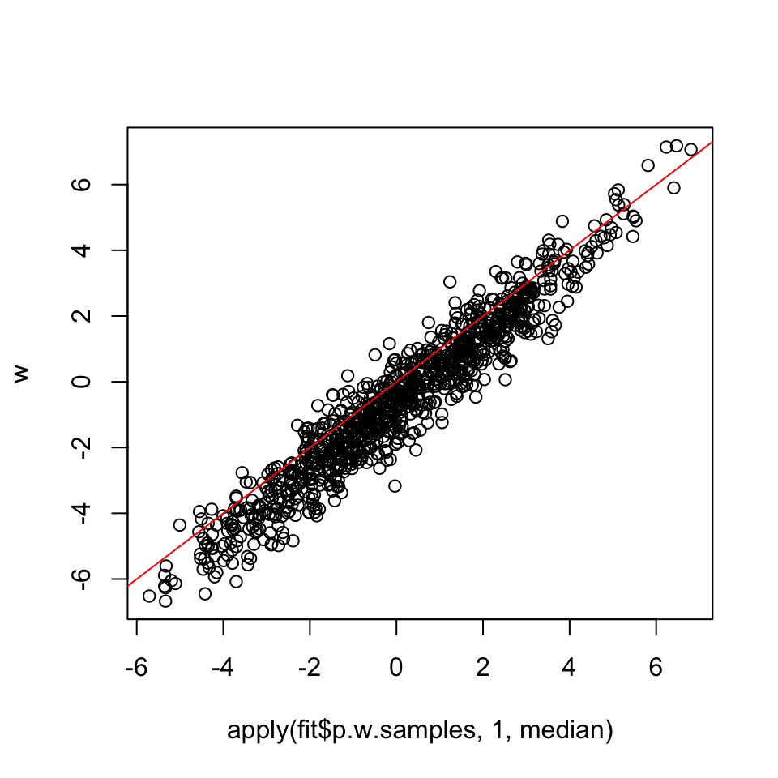

25 Day 25 – Scaling GPs for large data
25.1 Announcements
25.2 Gaussian Predictive Process (spBayes package)
projection idea
the predictive (child) process has the same covariance function \(C(\cdot | \boldsymbol{\theta})\) as the desired parent process
optimal predictor of dimension \(M < < n\) given the covariance function \(C(\cdot | \boldsymbol{\theta})\)
Define a set of knots \(\boldsymbol{\kappa} = (\kappa_1, \ldots, \kappa_M)'\)
The predictive process \(\boldsymbol{\eta}^{\star} \sim N(\mathbf{0}, \mathbf{C}^{\star})\) where \(\mathbf{C}^{\star}\) is the covariance matrix of the process over the \(M\) knots given parameters \(\boldsymbol{\theta}\)
The basis functions are the \(M\)-vector \(\mathbf{c}^{\star}(\mathbf{s} | \boldsymbol{\theta}) {\mathbf{C}^{\star}}^{-1}\) where \(\mathbf{c}^{\star}(\mathbf{s} | \boldsymbol{\theta}) = \left( Cov(\mathbf{s}, \mathbf{\kappa}_1), \ldots, Cov(\mathbf{s}, \mathbf{\kappa}_M) \right)\) which is the cross-covariance between the observed locations \(\mathbf{s}\) and the knot locations \(\boldsymbol{\kappa}\)
\[\begin{align*} y(\mathbf{s}) & = \mathbf{X}(\mathbf{s}) \boldsymbol{\beta} + \mathbf{c}^{\star} (\mathbf{s}) {\mathbf{C}^{\star}}^{-1} \boldsymbol{\eta}^{\star} + \varepsilon(\mathbf{s}) \end{align*}\]
- Thus, the spatial process has covariance
\[\begin{align*} Cov \left( \mathbf{c}^{\star} {\mathbf{C}^{\star}}^{-1} \boldsymbol{\eta}^{\star} \right) & = \left( \mathbf{c}^{\star} {\mathbf{C}^{\star}}^{-1} \right) Cov \left( \boldsymbol{\eta}^{\star} \right) \left( \mathbf{c}^{\star} {\mathbf{C}^{\star}}^{-1} \right)' \\ & = \mathbf{c}^{\star} (\mathbf{s}) {\mathbf{C}^{\star}}^{-1} \mathbf{C}^{\star} {\mathbf{C}^{\star}}^{-1} {\mathbf{c}^{\star}}' \\ & = \mathbf{c}^{\star} (\mathbf{s}) {\mathbf{C}^{\star}}^{-1} {\mathbf{c}^{\star}}' \end{align*}\]
which is an \(n \times n\) matrix that has rank \(M\) (not full rank)
- The Sherman-Morrison-Woodbury matrix inverse formula for invertible matrices \(\mathbf{A}\) and \(\mathbf{D}\) is
\[\begin{align*} \left( \mathbf{A} + \mathbf{U} \mathbf{D} \mathbf{V}' \right)^{-1} & = \mathbf{A}^{-1} - \mathbf{A}^{-1} \mathbf{U} \left( \mathbf{D}^{-1} + \mathbf{V}' \mathbf{A}^{-1} \mathbf{U} \right)^{-1} \mathbf{V}' \mathbf{A}^{-1} \end{align*}\]
and the matrix determinant formula is
\[\begin{align*} \left| \mathbf{A} + \mathbf{U} \mathbf{D} \mathbf{V}' \right| & = \left| \mathbf{D}^{-1} + \mathbf{V}' \mathbf{A}^{-1} \mathbf{U} \right| \left| \mathbf{D} \right| \left| \mathbf{A} \right| \end{align*}\]
- thus, the model can be represented in the integrated representation
\[\begin{align*} \mathbf{y} & \sim N \left( \mathbf{X} \boldsymbol{\beta}, \mathbf{c}^{\star} (\mathbf{s}) {\mathbf{C}^{\star}}^{-1} {\mathbf{c}^{\star}}' + \sigma^2 \mathbf{I} \right) \end{align*}\]
- the matrix inverse is
\[\begin{align*} \left( \mathbf{c}^{\star} (\mathbf{s}) {\mathbf{C}^{\star}}^{-1} {\mathbf{c}^{\star}}' + \sigma^2 \mathbf{I} \right) & = \left( \sigma^2 \mathbf{I} \right)^{-1} - \left( \sigma^2 \mathbf{I} \right)^{-1} {\mathbf{c}^{\star}} \left(\mathbf{C}^{\star} + {\mathbf{c}^{\star}}' \left( \sigma^2 \mathbf{I} \right)^{-1} {\mathbf{c}^{\star}} \right)^{-1} {\mathbf{c}^{\star}}' \left( \sigma^2 \mathbf{I} \right)^{-1} \end{align*}\]
which requires inversion of a diagonal \(n \times n\) matrix \(\sigma^2 \mathbf{I}\) which is trivial and the inversion of the \(M \times M\) matrix \(\mathbf{C}^{\star} + {\mathbf{c}^{\star}}' \left( \sigma^2 \mathbf{I} \right)^{-1} {\mathbf{c}^{\star}}\) where you have control over \(M\) and hence the computational complexity as this is \(\approx O(M^3) << O(n^3)\)
- advantages
fast if \(M\) is small
easy to embed in traditional models - mixed models, hierarchical models
easy to extend to non-stationarity (predictive process is nonstationary)
disadvantages
fits are overly smooth (unless \(M \approx n\) or the process itself is very smooth)
variance estimates are too small modified predictive process
## Make some data
set.seed(1)
n <- 1000
coords <- cbind(runif(n, 0, 1), runif(n, 0, 1))
X <- cbind(1, rnorm(n))
beta <- as.matrix(c(1, 5))
sigma.sq <- 5
tau.sq <- 1
phi <- 3 / 0.5
D <- as.matrix(rdist(coords))
R <- exp(-phi * D)
w <- c(rmvn(1, rep(0,n), sigma.sq * R))
y <- rnorm(n, X %*% beta + w, sqrt(tau.sq))
## Fit Predictive Process
n.samples <- 1000
batch.length <- 50
n.batch <- n.samples / batch.length
starting <- list("phi" = 3 / 0.5, "sigma.sq" = 5, "tau.sq" = 1)
tuning <- list("phi" = 0.5, "sigma.sq" = 0.5, "tau.sq" = 0.5)
priors <- list("phi.Unif" = c(3/10, 3 / 0.001),
"sigma.sq.IG" = c(2, 5),
"tau.sq.IG" = c(2, 1)
)
cov.model <- "exponential"
## specify the number and location of knots
n_knots <- 8^2 ## this works best as a squre
knots <- as.matrix(
expand.grid(
seq(0, 1, length.out = sqrt(n_knots)),
seq(0, 1, length.out = sqrt(n_knots))
)
)
if (file.exists(here::here("results", "PP.RData"))) {
load(here::here("results", "PP.RData"))
} else {
fit <- spLM(
y ~ X - 1,
coords = coords,
knots = knots,
starting = starting,
tuning = tuning,
priors = priors,
cov.model = cov.model,
n.samples = n.samples,
amcmc = list(
n.batch = n.batch,
batch.length = batch.length,
accept.rate = 0.44
),
n.report = 10 ## report every 10 adaptive batches
)
save(fit, file = here::here("results", "PP.RData"))
}To get the fitted parameters, we can recover these with composition sampling.
## discard the first half of the samples as burn-in
burn.in <- 0.5 * n.samples
## trace plots for the exponential model
recovered_params <- spRecover(fit, start = burn.in, thin = 2, verbose = FALSE)
theta_post <- mcmc.list(recovered_params$p.theta.samples)
plot(theta_post, density = FALSE)
round(summary(theta_post)$quantiles, 3)
beta_post <- mcmc.list(recovered_params$p.beta.recover.samples)
plot(beta_post, density = FALSE)
round(summary(beta_post)$quantiles, 3)## 2.5% 25% 50% 75% 97.5%
## sigma.sq 4.367 6.283 7.073 8.686 13.703
## tau.sq 0.607 0.832 0.943 1.033 1.269
## phi 1.495 2.592 3.344 3.766 5.114
## 2.5% 25% 50% 75% 97.5%
## X1 -3.315 -0.865 -0.078 0.98 3.056
## X2 4.882 4.929 4.960 4.99 5.048
## recover the spatial random effects
estimated_w <- recovered_params$p.w.recover.samples
plot(apply(estimated_w, 1, mean), w)
abline(0, 1, col = "red")
25.3 Sparse matrix routines
If most of the elements are 0, sparse matrix routines can speed up computation
Most analytic covariance functions are not sparse
However, most covariance functions are \(\approx\) 0 at large spatial distances
- truncate these values to be exactly 0
introduce a tapering function \(C_t(d | \gamma) = (1 - \frac{d}{\gamma})(4 \frac{d}{\gamma} + 1) I\{d < \gamma\}\)
then, the tapered covariance is
\[\begin{align*} C(d) = C_t(d | \gamma) C(d | \boldsymbol{\theta}) \end{align*}\]
where \(C(d | \boldsymbol{\theta})\) is a Matern covariance function
25.4 The stochastic PDE approach
The Matern covariance was originally derived using SPDEs
Lindgren et. al. (2011) showed the computational benefits of solving the SPDE
Defintion: the Laplace operator is
\[\begin{align*} {}\!\mathbin\bigtriangleup y(\mathbf{s}) & = \frac{{ \partial^2 y(\mathbf{s})} }{ { \partial s_1}^2 } + \frac{{ \partial^2 y(\mathbf{s})} }{ { \partial s_2}^2 } \end{align*}\]
for a positive integer \(n\), \({}\!\mathbin\bigtriangleup^n y(\mathbf{s}) = {}\!\mathbin\bigtriangleup\stackrel{\times n}{\cdots} {}\!\mathbin\bigtriangleup y(\mathbf{s})\)
- Thus, a GP with mean \(\mathbf{0}\), variance \(\tau^2\) and Matern covariance with range parameter \(\phi\) and smoothness parameter \(\nu\) can be shown to solve the SPDE
\[\begin{align*} (\phi^2 - {}\!\mathbin\bigtriangleup)^{\frac{\nu + 1}{2}} \sqrt{\frac{\phi^{2 \nu} \Gamma(\nu)}{4 \pi \tau^2 \Gamma(\nu + 1)}} y(\mathbf{s}) & = z(\mathbf{s}) \end{align*}\]
where \(z \sim\) WNGP
The Laplacian is a decorrelating operator
The Matern smoothness parameter determines the number of derivatives until you get to white noise
Consider the spatial case where \(\nu = 1\)
\[\begin{align*} \sqrt{\frac{\phi^{2 \nu} \Gamma(\nu)}{4 \pi \tau^2 \Gamma(\nu + 1)}} (\frac{1}{\phi^2} - {}\!\mathbin\bigtriangleup) y(\mathbf{s}) & = z (\mathbf{s}) \\ \Rightarrow \\ \frac{y(\mathbf{s})}{\phi^2} - \frac{{ \partial^2 y(\mathbf{s})} }{ { \partial s_1}^2 } - \frac{{ \partial^2 y(\mathbf{s})} }{ { \partial s_2}^2 } & = \frac{1}{\sqrt{\frac{\phi^{2 \nu} \Gamma(\nu)}{4 \pi \tau^2 \Gamma(\nu + 1)}}} z(\mathbf{s}) \end{align*}\]
represent the process as a SPDE gives a sparse precision matrix (the precision matrix is the inverse of the covariance)
If the data are on a regular gird, the SPDE approximation to a Matern covariance with smoothness parameter \(\nu = 1\) is derived as
Say \(\mathcal{D} = \{ , \ldots, -2, -1, 0, 1, 2, \ldots \}^2\) is a regular rectangular grid.
Then, we can approximate the partial derivatives as
\[\begin{align*} \frac{ {\partial^2 y(s_1, s_2)}}{ {\partial s_1}^2 } & = y(s_1 + 1, s_2) - 2 y(s_1, s_2) + y(s_1 - 1,s_2) \end{align*}\]
and
\[\begin{align*} \frac{ {\partial^2 y(s_1, s_2)}}{ {\partial s_2}^2 } & = y(s_1, s_2 + 1) - 2 y(s_1, s_2) + y(s_1, s_2 - 1). \end{align*}\]
Then, the SPDE is approximated by
\[\begin{align*} \left( 4 + \frac{1}{\phi^2} \right) y(\mathbf{s}_1, \mathbf{s}_2) - 4 \bar{y}(\mathbf{s}_1, \mathbf{s}_2) = \frac{1}{\sqrt{\frac{\phi^{2 \nu} \Gamma(\nu)}{4 \pi \tau^2 \Gamma(\nu + 1)}}} z(\mathbf{s}) \end{align*}\]
where \(\bar{y}(\mathbf{s}_1, \mathbf{s}_2)\) is the mean of the 4 neighbors of the location (s_1, s_2).
In matrix notation, this is
\[\begin{align*} \left( 4 + \frac{1}{\phi^2} \right) \mathbf{y}- \mathbf{A} \mathbf{y} = \frac{1}{\sqrt{\frac{\phi^{2 \nu} \Gamma(\nu)}{4 \pi \tau^2 \Gamma(\nu + 1)}}} \mathbf{z} \end{align*}\]
so that
\[\begin{align*} \mathbf{y} & \sim N(\mathbf{0}, \boldsymbol{\Sigma}) \end{align*}\]
where \(\boldsymbol{\Sigma}^{-1} = \frac{1}{\tau^2} \mathbf{Q}\mathbf{Q}'\) with \(\tau^2 = \frac{1}{\left( \frac{\phi^{2 \nu} \Gamma(\nu)}{4 \pi \tau^2 \Gamma(\nu + 1)} \right)}\) (notice that this is another reason why the estimates of \(\phi\) is spatial models is inconsistent) where
\[\begin{align*} \mathbf{Q} & = (4 + \frac{1}{\phi^2})\mathbf{I} - \mathbf{A} \end{align*}\]
where \(\mathbf{A}\) is an adjacency matrix with \(ij\)th element \(a_{ij} = 1\) if locations \(i\) and \(j\) are neighbors and 0 otherwise
- because this model is sparse in the precision (and the precision is needed to evaluate the likelihood) this representation are fast
What if the data aren’t on a regular grid?
- construct a triangular mesh and use linear interpolation along the grid
25.5 Approximate likelihood methods
- twice the negative log likelihood is
\[\begin{align*} - 2 log [\mathbf{y} | \boldsymbol{\beta}, \boldsymbol{\theta}] & = log |\boldsymbol{\Sigma}(\boldsymbol{\theta}) | + \left( \mathbf{y} - \mathbf{X} \boldsymbol{\beta} \right) \boldsymbol{\Sigma}(\boldsymbol{\theta})^{-1} \left( \mathbf{y} - \mathbf{X} \boldsymbol{\beta} \right)' \end{align*}\]
Many approximations have been proposed
Parameters that maximize the approximate likelihood are approximates for the ful likelihood MLE
examples:
- pairwise likelihood: define \(\boldsymbol{\delta}_{ij} = \begin{pmatrix} y_i - X_i \boldsymbol{\beta} \\ y_j - X_j \boldsymbol{\beta} \end{pmatrix}\)
\[\begin{align*} [\mathbf{y} | \boldsymbol{\beta}, \boldsymbol{\theta}] \approx \prod_{i < j} | \boldsymbol{\Sigma}_{ij} | \exp\{ - \frac{1}{2} \boldsymbol{\delta}_{ij}' \boldsymbol{\Sigma}_{ij}^{-1} \boldsymbol{\delta}_{ij} \} \\ & = \prod_{i < j} [y_i, j_y | \boldsymbol{\beta}, \boldsymbol{\theta}] \end{align*}\]
- independent blocks
\[\begin{align*} [\mathbf{y} | \boldsymbol{\beta}, \boldsymbol{\theta}] \approx \prod_{b = 1}^B [\mathbf{y}_b | \boldsymbol{\beta}, \boldsymbol{\theta}] \end{align*}\]
where \(\mathbf{y}_b\) are the data in block \(b = 1, \ldots, B\)
draw picture
each of these are unbiased estimating equations and standard errors can be derived using a sandwich formula
25.6 Vecchia Approximations
- Any joint PDF can be written as:
\[\begin{align*} [y_1, \ldots, y_n] & = [y_1] [y_2 | y_1] [y_3 | y1, y2] \cdots [y_n | y_{n-1}, \ldots, y_1] \\ & = \prod_{i=1}^n [y_i | y_j \hspace{0.25cm} \forall j < i] \end{align*}\]
- Note: The converse is not true! A set of conditional PDFs when multiplied together does not always guarantee a valid joint probability distribution - a theorem called the Hammersly Clifford Theorem defines under what conditions a joint distribution defines a valid joint PDF.
The Vecchia approximation decomposes an \(n\)-dimensional PDF into \(n\) one-dimensional PDFs
However, the last term requires an \(n-1 \times n-1\) matrix inverse must be calculated (in this formulation)
Outlines a formula for more useful approximations:
Pick a conditioning sequence of sets that defines a Markov Chain (independent samples, nearest neighbor groupings, etc.)
How to pick the conditioning set?
- order of conditioning matters, but is not super important
how to compute standard errors: sandwhich estimator
## Make some data
set.seed(1)
n <- 1000
coords <- cbind(runif(n,0,1), runif(n,0,1))
x <- cbind(1, rnorm(n))
B <- as.matrix(c(1,5))
sigma.sq <- 5
tau.sq <- 1
phi <- 3/0.5
D <- as.matrix(rdist(coords))
R <- exp(-phi * D)
w <- c(rmvn(1, rep(0,n), sigma.sq*R))
y <- rnorm(n, x%*%B + w, sqrt(tau.sq))
##Fit a Response and Latent NNGP model
n.samples <- 500
starting <- list("phi"=phi, "sigma.sq"=5, "tau.sq"=1)
tuning <- list("phi"=0.5, "sigma.sq"=0.5, "tau.sq"=0.5)
priors <- list("phi.Unif"=c(3/1, 3/0.01), "sigma.sq.IG"=c(2, 5), "tau.sq.IG"=c(2, 1))
cov.model <- "exponential"
if (file.exists(here::here("results", "NNGP.RData"))) {
load(here::here("results", "NNGP.RData"))
} else {
fit <- spNNGP(y ~ x - 1,
coords = coords,
starting = starting,
method = "latent",
# method = "response", ## use for large n, doesn't save spatial random effects
n.neighbors = 10,
tuning = tuning,
priors = priors,
cov.model = cov.model,
n.samples = n.samples,
n.omp.threads = 1
)
save(fit, file = here::here("results", "NNGP.RData"))
}
summary(fit)
plot(apply(fit$p.w.samples, 1, median), w)
abline(a = 0, b = 1, col = "red")##
## Call:
## spNNGP(formula = y ~ x - 1, coords = coords, method = "latent",
## n.neighbors = 10, starting = starting, tuning = tuning,
## priors = priors, cov.model = cov.model, n.samples = n.samples,
## n.omp.threads = 1)
##
## Model class is NNGP, method latent, family gaussian.
##
## Model object contains 500 MCMC samples.
##
## Chain sub.sample:
## start = 250
## end = 500
## thin = 1
## samples size = 251
## 2.5% 25% 50% 75% 97.5%
## x1 0.134 0.270 0.360 0.478 0.627
## x2 4.897 4.955 4.979 5.003 5.049
## sigma.sq 4.327 5.044 5.554 6.275 7.159
## tau.sq 0.947 1.076 1.149 1.205 1.335
## phi 3.952 4.360 4.757 5.223 7.611
- Advantages:
- very good approximation
- GPUs available
- Disadvantages:
- hard for non-Gaussian data